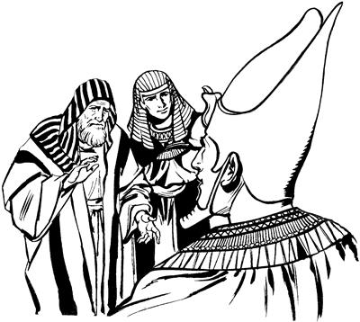

Yakub poneko Mesir nimi sikini yaboag piogha (47:1-12)
47
1-2 Wene seogti, eldo yabo lambare enero poa Mesir nimi sikini Firaun saramag poa pihiogti, ambarelamsiogti, “Nari naiap, naro yabongeap, sindi pham kambing, domba, sapiap sikindinge saeag agha wamlaap, Kanaana yaangdi, wenena Gosyen so'oag wamang,” aro ambatsiog.Wene aro ambatsiogti, elkabo lambare nhon piekne abeneko sindi si babe ambatsiog.
3-4 Wene aro ambatsiogpa, nimi nubunge Firaun ponekori, “A'undinge awe huropne?” seog.
Wene seogpa sindina, “Nuna pham mo'oro yae ua urop nimi, samenag isang wamog saog uro,” seekti, “Nu yaapnena, Kanaan kwaneng yo waelbaoba, tena nuri pham sembe orog taoba, ‘Mog so'o eneag wamukap,’ aro yaap. Ane sembe, Nai, ‘Mog so'o Gosyen wamukap,’ aro mololangkeap,” seek.
5 Wene seekpa, nimi nubunge Firaundi Yusubag yubu lelamogti, “Wene aniap ankaboap ane wamang. 6 Mog so'o Mesir ane anenge mog so'o as sao tal. Sin mog so'o waliag Gosyen wamukang. Sin nusamag pham paia una etpare sol wali nimi wamikti, naringe pham babe wene sindi yae wamsukang,” aro ambarog.

7 Yusupti ili babe enero nimi nubunge Firaun whingag pabiog. Pabiogpa, Yakubti nimi nubunge poneko kibogpa, 8 nimi nubunge ponekori Yusup ili Yakub hailamogti, “An mangkageeka hengkun etpare wamlam?” aro haibaog.
9 Wene aro haibaogpa, Yakubti, “Nani, na nimi ina tongonne tahiri, sekel ananne saog uro ikin uro wamsiri, hengkun tom ta'om agha epto no'op tarabare (130) wamna. Samen Nanisang yabo ina tongoro tero hengkun tenghan-tenghanne palamog saog uro kom,” seog.
10 Wene seogti, Yakubti nimi nubunge yubu sia leropne poneko kibogti, lambaog. 11 Lambaogpa, Firaundina, “Yusup iliap elkaboap ane wamlulom,” aro Mesir so'oag so'o sukuptobag “Ngai talulom,” aro nimi nubunge yubu sia leropneri ambatsioghag as Ramses peramag wamek. 12 Ramses peramag wamekpa, Yusupti iliap, elkaboap, sikin maboap sembe kwaneng yeplamsiog.
Kwaneng yo aghabog palamogha (47:13-26)
13 Kwaneng yo Mesirap Kanaanap wamogne neneko sop-sop kwaneng yo aghabog palamogpa, kwaneng orog taogpa, nimi mog so'o anekoag wamek nimi ni pesa talamek. 14 Pesa talamekpa, Yusupti pongoroba kwaneng roti sumbaneba kamna kapto tolamek kal ma'al taneko nimi yubu sia leropneri aeag sop-sop poa pail palamogpa, nimi saeag kal ma'al orog taog. 15 Mesir wamek nimiri babe, Kanaan wamek nimiri babe, sindinge kal ma'al kwaneng kamna kapto tobiagha toro tena orog tahiogpa, Yusubag yingkina lelamekti, “Nununge kal ma'al orog tahio, nu kwaneng tatsululam. Nu tebabeagti lipsiseng kom,” alamek.
16 Wene alamekpa, Yusupti lelamogti, “A'undinge kal ma'al orog tahio tanena, pham tarel anumunba, nari kwaneng tatsinun,” alamog.
17 Wene alamogpa, sindi pham tarel alamekpa, kwaneng lunuro tarelamsiog. Sindi, “Kwaneng tatsilul,” aro kapto payalamek phamna kuda, domba, kambing, sapi, apna keledaiap. Hengkun enena phamag agha kwaneng kamna kapto tarelamsiog.
18 Nen nhon hengkunag yingkina lelamek nena, “Nu lag phoro lelamap, kal ma'al nuringe orog tahio, pham nuringe andi toro aom. Nu wene an tatkenepne sa'a-sa'a saeag wamla kom. Wenena nu nongap, nununge awe so'oap aghabog. 19 Nu tebabeagti, lipsiseng kom! Nu nimi nong babe, nununge awe so'o babe kwaneng agha kamna tatsululam. Nu nimi nongap, nununge awe so'oap, nimi nubunge yubu sia leropneringe talul. Ot nununge awe so'o si mag komdi, iklerebaleag, yina aweag memneba tatsimenba, melamukap,” alamek.
20 Wene alamekpa, Mesir nimiringe awe so'o wamogne Yusupti yubu sia leropne Firaun sembe tobog. Kwaneng yo aneko maiknonge waelbaogpa, Mesir wamek nimiringe sindinge awe so'o yubu sia leropneri kwanengag kamna ni tobog. 21 Mesir mog so'o ni wamek nimi Yusupti arukna nembahiog.
22 Mesir mem nangdinge ogna Yusupti kamna tomna kom. Sin nang enena yubu sia leropneri nangena kamna tatto eldi saelbamsiog. 23-24 Yusupti Mesir nimiri so'o Firaun sembe kamna tobogti, yubu lelamogti, “Sumene nari a'un nongap, a'undi awe so'oap kamna topsinba, Firaun yubu sia leropneringe talom. Anena yina aweag memneba mepmunba, whi tale tanena, topmundi, palu lambare pogto nembatmundi, a'un kelabo meap tena sembe, yina sembe babe palu tombare tol tolapmundi, Firaun sembe pogtopne nhon tarelamlulom,” seog.
25 Wene seogpa, Mesir nimi tanekori lelamekti, “Andi nu tebahabe nimi aghana, toro pipsilamba, nurina ‘Nani,’ alamap. Nu wana waliag agha yubu sia leropne arukna wamukap,” seek.
26 Wene seekpa, Yusupti “Mem nangdi so'o Firaun saeag talul kom, aghana yog nimiri wero mero telamnepne, pogtopne lambare agha nhon yubu sia leropne sembe tarel alamlulom,” seogti, karepto pibogne neneko sunsunum uro yubu sia karepto pibogne, wene babe anam wamlaba, Mesir nimiri unulamang.
Yakub tebaneba peramag wamogha (47:27-31)
27 Israel nimi taneko Mesir so'oag wamekti, Gosyen aneko ngai taekti, wamekti, tup talamekpa, nimi likna maikno mangaro palamog.
28 Yakub Mesir aneko yingkina wamekpa, hengkun ko'olom tarabare piog. Yakub hengkun samenag wamogneap, ma'aro tanena, hengkun teng lambare eptopne aobare (147) wamog. 29 Yakub el, “Wene loba tanep peram wamna,” sembaogti, elme Yusup yobogti, ambarelamogti, “Name, andi na o'ona sembamnelam tanena, na yan kwagha mombolag sae tobongkiapmendi, sik uro salag leplulamnena, andi, ‘Mesir so'oag ane sikkenun kom,’ aro yubu salag leplulam. 30 Nanisag yaboag yame naringe pineleba, na wanaag ‘So'o siknoho,’ sembamnangena, nanisang yabo so'o siksiroba peramag ‘So'o siknoho,’ sembamna,” seog.
Wene seogpa, Yusupti lelamogti, “Nani, wene selam tanena, anba andi, ‘Leplamneag,’ uanun,” seog.
31 Wene seogpa, Yakubti lelamogti, “Name, ‘Sik uro uanun,’ aro nanag leplulam,” seogpa, Yusupti “Sik uro uanun,” aro ili ambarogpa, Yakub ae usah usoghag sip yan sanukto pul pina Allah omekaog.